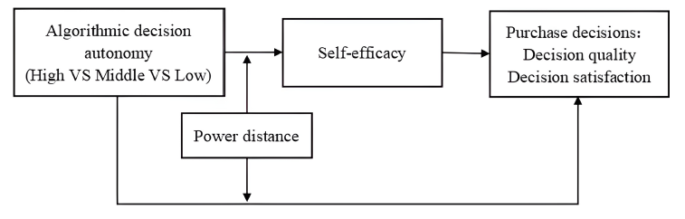

Introduction to Choices
The effects of recommendation algorithms on society are profound as algorithms have been integrated in a vast majority of digital systems designed to keep users engaged. These effects are often seen within adolescents, particularly influencing their user engagement and general behaviour. This webpage focuses on understanding the interaction between algorithms and society. It intends to explore the choices society has regarding recommendation algorithms; highlighting the need for greater awareness regarding such algorithms shaping society's online experiences, the effects on conscious consumer choices and online shopping habits, as well as ethical algorithm design.
The Importance of User Awareness
Although social media users can turn off algorithmic recommendations or limit personalised content on virtually every platform, most users are still unaware of these options. This lack of awareness often means people are influenced by algorithm-driven feeds without realising the extent to which their online experience is curated. The conducted research provides new insight into different transparency approaches, focusing on how recommendation algorithms interact with users and how information on the platform is used (Gausen, Guo, & Luk, 2024). This highlights the need for greater user awareness about how algorithms can influence their content, as well as enlightening the users about the choice to limit these effects. This especially reflects onto adolescents, as they make up the majority of social media users, as well as being the most easily influenced demographic. Many of these adolescents don't realise that algorithms are actively shaping their online experiences by prioritising certain content based on their previous behaviour, interests, or what the platform deems most engaging. Without awareness of the choice to disable algorithmic recommendation, users may find themselves trapped in an echo chamber or endlessly scrolling through highly curated feeds without fully understanding how these recommendations are being made.
Social media platforms are designed to keep users engaged, and the algorithms are optimised to prioritise content that encourages interaction such as liking or commenting on a post. Despite having the choice to limit algorithmic influence, turning off personalised recommendations or adjusting privacy settings are often hidden deep within the platform's user interface. This makes it difficult for users to access these options or even know of their existence, so much so that even adolescents who have spent the majority of their lives using social media platforms are unaware of the choice to limit them. For instance, Instagram allows users to limit personalised ads by changing their advertisement preferences, but this feature is rarely mentioned. As a result, many users continue to engage with algorithm-curated content, that is designed to keep them engaged. This causes many of these adolescents to spend excessive time on platforms due to 'infinite scrolling' encouraged by highly tailored content. Consequently, this leads to users spending much longer periods of time on the platform than they originally intended, which can contribute to compulsive use and addiction.
To mitigate these effects, users can take action by adjusting privacy settings such as enabling 'do not track' which is often found in browsers like Firefox. Using Incognito browsing modes is another option, to limit how algorithms can personalise their experiences though the use of cookies or other data associated with personal devices and accounts. In a recent study, participants were asked to indicate whether they engaged in behaviours such as using incognito mode or clearing their browsing history to escape algorithmic influence (Oeldorf-Hirsch & Neubaum, 2023). These choices allow users to regain some control over how they interact with content, helping to limit the addictive nature of personalised feeds caused by recommendation algorithms. Additionally, users can limit their time on certain apps, setting screen-time limits, or even uninstalling apps altogether.
Conscious Consumer Choices
Algorithmic decision-making has been shown to have a major impact on consumer choices, particularly among adolescents, who are often influenced through social media platforms such as Instagram and TikTok. Social media platforms more often than not contain recommendation algorithms which can also shape adolescents' shopping behaviour. This leads to both negative and positive impacts. Recommendation algorithms can help young consumers by enhancing their self-efficacy in decision-making. Therefore, algorithmically determined decisions can have a positive effect on adolescents, helping them navigate their choices more confidently in a marketplace filled with options (Fan & Liu, 2022).
However, this reliance on algorithms can also lead to negative spending habits. Adolescents may feel pressured to conform to algorithmic recommendations, resulting in impulsive buying behaviours that lack critical evaluation. Fan and Liu (2022) note that high algorithmic decision-making autonomy means that algorithmic recommendations are the main source of content on a given page, influencing peoples' purchasing decisions negatively, which may further entrap adolescent users in cycles of overconsumption. This not only affects individual adolescents but also reflects broader societal trends where recommendation algorithms increasingly dictate consumer behaviour, curating a culture of mindless spending.
Figure 1
Conceptual Model of Algorithmic Decision Autonomy and Consumer Purchase Decisions
Copyright 2022 by Fan & Liu.
Figure 1 (Fan & Liu, 2022, p. 3) shows how different levels of algorithmic recommendation influences consumer purchase decisions. It illustrates that when an algorithm assists consumers middle autonomy is typically most effective. When algorithmic recommendation dominates however (high autonomy), it can negatively impact consumer satisfaction. This highlights the need for ethical algorithm design by emphasising the importance of balancing algorithmic recommendation with consumer needs. Ethical design should ensure that algorithms help consumers come to their own decisions rather than dominate their choices.
As adolescents are often more susceptible to these influences, it is crucial for them to understand the impact of algorithms on their shopping experiences. By becoming aware of how algorithms shape their decisions, young consumers can better harness the positives while mitigating the risks, ensuring their choices align with genuine preferences rather than mere algorithmic suggestions. This awareness can foster a healthier relationship with technology, enabling adolescents to navigate the complexities of modern consumerism, while retaining their autonomy in decision-making.
Advocating for Ethical Recommendation Algorithm Design
Policy makers play a significant role in this research, as they shape regulations that govern how algorithms operate, especially in terms of ethics, transparency and user control. While individual users of social media platforms can make choices about limiting algorithmic recommendations, ensuring those options are accessible rests in the hands of policy makers. Gausen et al. (2024) provides insights within her study, showing how algorithms interact with users, such as how they prioritize content and gather information. This could be leveraged by policy makers to understand what methods the algorithms use to recommend different types of information. Policy makers have both the power and the choice to enforce stricter transparency guidelines, requiring platforms to disclose how algorithms prioritise and filter content. Additionally, they can introduce regulations that give users clearer and more accessible options to control their digital experiences.
Conclusion to Choices
The conducted research explored and analysed various sources regarding recommendation algorithms, providing further insights into the choices for their design and implementation in society. The research highlighted various aspects of such algorithms, as well as their effects on society and adolescents, whose behaviour is impacted the most through curation of their online experiences; bringing both positive and negative effects, such as providing users with more entertaining content or inhibiting poor spending behaviours respectively. This outlines that leveraging the power of recommendation algorithms whilst maintaining a balanced ethical approach is imperative for society. Furthermore, raising awareness about user choices, such as adjusting privacy settings or limiting algorithmic recommendations, can help mitigate their negative effects. Additionally, ethical algorithm design and stronger transparency regulations can also further empower users and policy makers to promote healthier digital interactions.
Style modified using Tailwind CSS